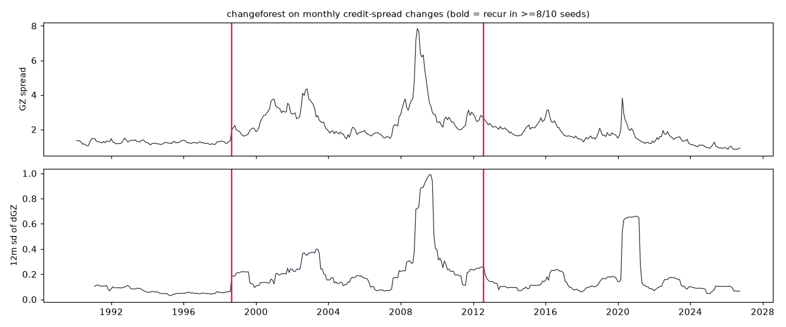

Has the behaviour of credit spreads, and their link to equity volatility, changed regime since 1990, and when?
ebp_monthly.csv (GZ spread and excess bond premium) plus FRED VIXCLS and DGS10 from Drive (retrieved 2026-11-10; manifest.json). Month-end means, then monthly changes, z-scored. n = 440 months, 1990-02 → 2026-09.
methods/changeforest/applications/3/run.py runs random_forest, plus change_in_mean, knn, Binseg-rbf with the same K, seeds 0–9 at ±3 months, 10 iid shuffles and 10 VAR(1) simulations. The "original" is the first run in the scout venv; the reproduction is a clean venv built from the lockfile.

| segment | months | sd ΔGZ | sd ΔEBP | sd Δlog VIX | corr(ΔGZ, Δlog VIX) | mean GZ |
|---|---|---|---|---|---|---|
| 1990-02 → 1998-07 | 102 | 0.069 | 0.087 | 0.113 | −0.02 | 1.26 |
| 1998-08 → 2012-06 | 167 | 0.331 | 0.309 | 0.162 | 0.70 | 2.68 |
| 2012-07 → 2026-09 | 171 | 0.205 | 0.204 | 0.187 | 0.68 | 1.67 |
| number | original (scout venv) | reproduced (clean venv) |
|---|---|---|
| breaks | 1998-08-31, 2012-07-31 | same |
| break count across seeds | 2–4 | 2–4 |
| recurrence of each break | 0.9, 0.8 | 0.9, 0.8 |
| change-in-mean / knn breaks | 0 / 5 | 0 / 5 |
| Binseg-rbf overlap | 0.5 | 0.5 |
There are three credit regimes, and the cleanest finding is the 1998 break. Before it, spread changes were unrelated to VIX changes; after it, the two moved together (corr about 0.7) and have kept doing so.